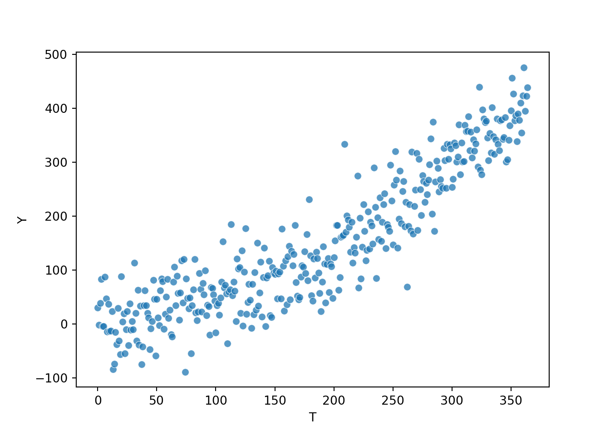
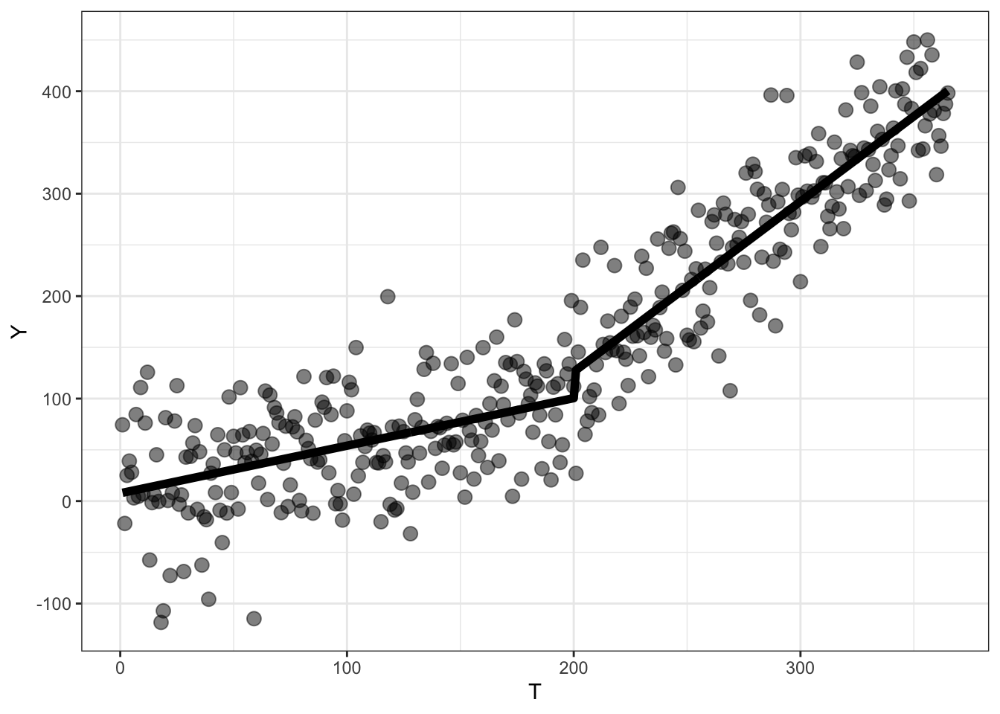
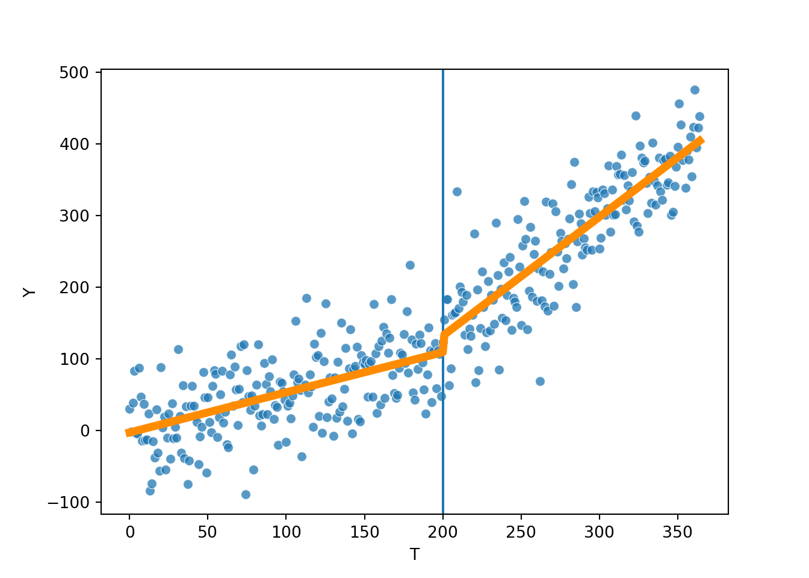
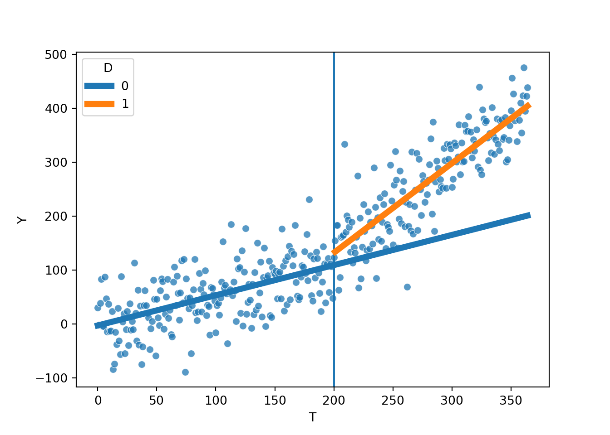
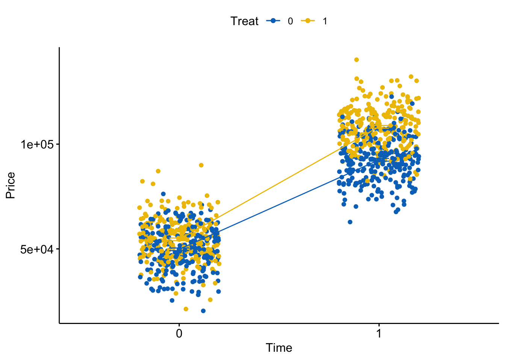
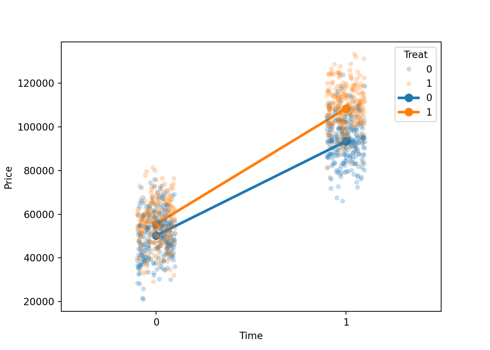
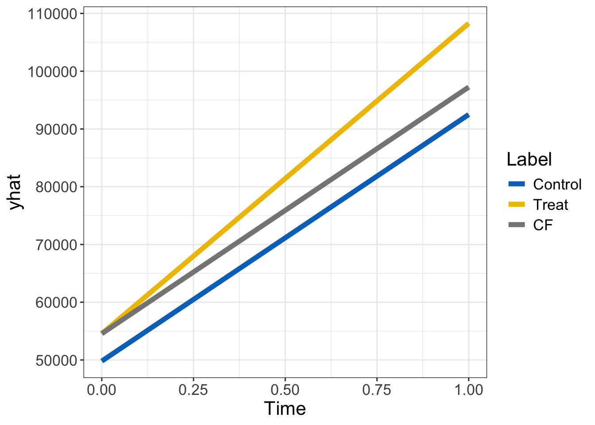
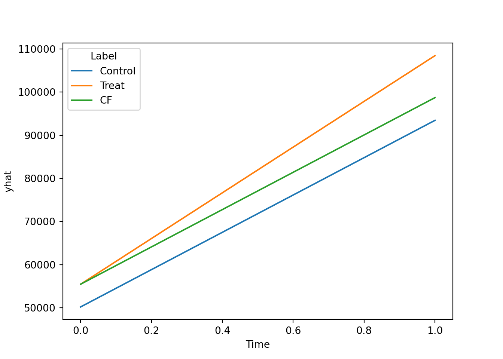

library(tidyverse)
library(ggpubr)
library(ggsci)
library(sjPlot)GEOG 6960 Causality in Geog. Studies 3
Introduction
In this lab, we’re going to explore what a randomized control trial (RCT) looks like, and the use of propensity score matching to replicate the type of randomization seen in RCTs.
As a reminder, the goal of causal inference is to remove any bias related to the treatment: the covariate we are interested in. This is usually expressed as a confounder : one or more additional covariates (\(X\)) that affect both the treatment (\(T\)) and the outcome (\(Y\)). RCTs avoid this problem by trying to ensure that the assignation of \(T\) is random relative to \(X\). If this is true, then the causal effect (the thing we’re actually interested in) can usually be estimated using simple statistics (\(t\)-tests, linear models).
Packages
We’ll be using the following R packages, so make sure they are installed and then load them:
We’ll be using the following Python packages, so install these using your favorite package manage (pip, conda) and import them:
import random
import numpy as np
import pandas as pd
import matplotlib.pyplot as plt
import seaborn as sns
import statsmodels.api as sm
import statsmodels.formula.api as smfInterrupted Time Series
Interrupted time series models assess the causal effect of an intervention or treatment by examining changes in the trend of an outcome (\(Y\)) before and after the start of the treatment. This is quite widely used in social and economic settings, where often only one set of data can be observed (e.g. tracking GDP before and after the implementation of a fiscal policy).
The format for the ITS model is
\[ Y = \beta_0 + \beta_1 T + \beta_2 D + \beta_3 P \]
Where:
- \(Y\) is the outcome
- \(T\) is time
- \(D\) is a binary indicator (pre vs. post treatment)
- \(P\) is a index of time since treatment
Simulated data
First, we’re going to create a synthetic dataset, which will include the impact of a treatment. The time series will include a base trend, which will then be modified after the start of the intervention.
First, we’ll set a random seed to make the results repeatable. As before, try changing this to see how the noise we will add changes the reuslts.
set.seed(42)np.random.seed(42)Now we’ll simulate the data. The data will represent student outcomes over a full year (365 days), and we’ll use the following equation to represent the base trend (\(Y\) is the outcome, \(T\) is the time in days). This will give a starting value of 5.4 and an upward trend of 0.5 per day:
\[ Y = 5.4 + 0.5 \times T \] To this we’ll add the following effects: - An immediate effect of the policy change of +20 points - A change in the slope of +1.2
To include these, we need to make the two vectors (\(D\) and \(P\)). With this, the equation to generate the data is:
\[ Y = 5.4 + 0.5 \times T + 20 \times D + 1.2 \times P \]
Finally, we’ll add some noise to the trends to represent individual daily variation (\(N(0, 50)\)).
First generate the basic equation:
T = rep(1:365)
D = ifelse(T > 200, 1, 0)
P = ifelse(T <= 200, 0, rep(1:200))
Y = 5.4 + 0.5 * T + 20 * D + 1.2 * PNow add errors and combine everything into a data frame:
err = rnorm(365, 0, 50)
Y = Y + err
well_df <- as.data.frame(cbind(Y, T, D, P)) And finally plot it:
ggplot(well_df, aes(x = T, y = Y)) +
geom_point(size = 3, alpha = 0.5) +
geom_vline(xintercept = 201) +
theme_bw() +
theme(text = element_text(size = 16))
First generate the basic equation:
T = np.arange(365)
D = np.where(T > 200, 1, 0)
P = T - 200
P = np.where(T <= 200, 0, P)
Y = 5.4 + 0.5 * T + 20 * D + 1.2 * PNow add errors and combine everything into a data frame:
err = np.random.normal(0, 50, 365)
Y = Y + err
well_df = pd.DataFrame({'Y': Y,
'T': T,
'D': D,
'P': P})And finally plot it:
sns.scatterplot(well_df,
x = "T",
y = "Y",
alpha = 0.75)
A simple model
Before fitting the ITS model, we’ll fit a simple trend model of the outcome over time. In this case, this we’ll just use a simple OLS model.
fit0 <- lm(Y ~ T, well_df)
tab_model(fit0)| Y | |||
| Predictors | Estimates | CI | p |
| (Intercept) | -49.30 | -61.27 – -37.32 | <0.001 |
| T | 1.08 | 1.03 – 1.14 | <0.001 |
| Observations | 365 | ||
| R2 / R2 adjusted | 0.796 / 0.795 | ||
mod = smf.ols(formula='Y ~ T', data=well_df)
fit0 = mod.fit()
print(fit0.summary()) OLS Regression Results
==============================================================================
Dep. Variable: Y R-squared: 0.817
Model: OLS Adj. R-squared: 0.816
Method: Least Squares F-statistic: 1618.
Date: Fri, 06 Sep 2024 Prob (F-statistic): 8.38e-136
Time: 17:06:37 Log-Likelihood: -1986.9
No. Observations: 365 AIC: 3978.
Df Residuals: 363 BIC: 3986.
Df Model: 1
Covariance Type: nonrobust
==============================================================================
coef std err t P>|t| [0.025 0.975]
------------------------------------------------------------------------------
Intercept -53.6683 5.862 -9.155 0.000 -65.196 -42.141
T 1.1211 0.028 40.218 0.000 1.066 1.176
==============================================================================
Omnibus: 0.840 Durbin-Watson: 1.519
Prob(Omnibus): 0.657 Jarque-Bera (JB): 0.939
Skew: -0.068 Prob(JB): 0.625
Kurtosis: 2.792 Cond. No. 420.
==============================================================================
Notes:
[1] Standard Errors assume that the covariance matrix of the errors is correctly specified.Note that the slope we obtain here falls somewhere between the baseline trend (0.5) and the post-treatment trend (0.5 + 1.2), as we have not accounted for this effect as a separate term in the model.
Now we’ll fit the full ITS model. As a reminder, this extends the basic OLS model by including the two additional vectors described above.
ITS model
fit1 <- lm(Y ~ T + D + P, well_df)
tab_model(fit1)| Y | |||
| Predictors | Estimates | CI | p |
| (Intercept) | 7.64 | -5.73 – 21.02 | 0.262 |
| T | 0.46 | 0.35 – 0.58 | <0.001 |
| D | 25.71 | 5.87 – 45.54 | 0.011 |
| P | 1.20 | 1.01 – 1.39 | <0.001 |
| Observations | 365 | ||
| R2 / R2 adjusted | 0.862 / 0.860 | ||
mod = smf.ols(formula='Y ~ T + D + P', data=well_df)
fit1 = mod.fit()
print(fit1.summary()) OLS Regression Results
==============================================================================
Dep. Variable: Y R-squared: 0.870
Model: OLS Adj. R-squared: 0.869
Method: Least Squares F-statistic: 803.5
Date: Fri, 06 Sep 2024 Prob (F-statistic): 2.35e-159
Time: 17:06:37 Log-Likelihood: -1924.6
No. Observations: 365 AIC: 3857.
Df Residuals: 361 BIC: 3873.
Df Model: 3
Covariance Type: nonrobust
==============================================================================
coef std err t P>|t| [0.025 0.975]
------------------------------------------------------------------------------
Intercept -2.4776 6.667 -0.372 0.710 -15.588 10.632
T 0.5594 0.058 9.701 0.000 0.446 0.673
D 22.9193 9.991 2.294 0.022 3.271 42.568
P 1.0990 0.097 11.308 0.000 0.908 1.290
==============================================================================
Omnibus: 4.812 Durbin-Watson: 2.136
Prob(Omnibus): 0.090 Jarque-Bera (JB): 5.520
Skew: 0.134 Prob(JB): 0.0633
Kurtosis: 3.539 Cond. No. 908.
==============================================================================
Notes:
[1] Standard Errors assume that the covariance matrix of the errors is correctly specified.The values we used when generating the data should now be a lot closer to the model coefficients (or at least within the confidence intervals).
One of the advantages of fitting these models in standard statistical frameworks (like OLS) is that we can use other diagnostics tools. For example, we can use ANOVA to compare the two model, to see if the additional complexity of the ITS model is worthwhile:
anova(fit0, fit1)Analysis of Variance Table
Model 1: Y ~ T
Model 2: Y ~ T + D + P
Res.Df RSS Df Sum of Sq F Pr(>F)
1 363 1222981
2 361 828505 2 394476 85.941 < 2.2e-16 ***
---
Signif. codes: 0 '***' 0.001 '**' 0.01 '*' 0.05 '.' 0.1 ' ' 1sm.stats.anova_lm(fit0, fit1) df_resid ssr df_diff ss_diff F Pr(>F)
0 363.0 1.142920e+06 0.0 NaN NaN NaN
1 361.0 8.122294e+05 2.0 330690.71979 73.488689 1.679349e-27The low \(p\)-value indicates that the more complex ITS model provides a better fit.
Let’s now use this to visualize the model. First create a new data set to predict for, the plot the results:
well_df$yhat <- predict(fit1)
head(well_df) Y T D P yhat
1 74.447922 1 0 0 8.108687
2 -21.834909 2 0 0 8.572678
3 25.056421 3 0 0 9.036669
4 39.043130 4 0 0 9.500660
5 28.113416 5 0 0 9.964650
6 3.093774 6 0 0 10.428641ggplot(well_df, aes(x = T)) +
geom_point(aes(y = Y), size = 3, alpha = 0.5) +
geom_line(data = well_df, aes(y = yhat), size = 2) +
theme_bw()Warning: Using `size` aesthetic for lines was deprecated in ggplot2 3.4.0.
ℹ Please use `linewidth` instead.
well_df['yhat'] = fit1.predict()fig, ax = plt.subplots()
sns.scatterplot(well_df, x = "T", y = "Y",
alpha = 0.75, ax=ax)
plt.axvline(x=200)
sns.lineplot(well_df, x = "T", y = "yhat",ax=ax,
color="darkorange", linewidth=5)
Counterfactual
We can use the coefficients from the ITS model to calculate the counterfactual for the post-treatment period. The estimation of this is simple - we just set the values of \(D\) and \(P\) to zero (rather than the value we set above). In the following code, we first extract the model coefficients, then use these to estimate the factual and counterfactual for 20 days post-treatment.
b0 = coef(fit1)[1]
b1 = coef(fit1)[2]
b2 = coef(fit1)[3]
b3 = coef(fit1)[4]Factual:
post_time <- 20
b0 + b1 * (200 + post_time) + b2 + b3 * post_time(Intercept)
159.3938 Counterfactual:
b0 + b1 * (200 + post_time) (Intercept)
109.7227 b0 = fit1.params['Intercept']
b1 = fit1.params['T']
b2 = fit1.params['D']
b3 = fit1.params['P']Factual:
post_time = 20
b0 + b1 * (200 + post_time) + b2 + b3 * post_timenp.float64(165.4855648977787)Counterfactual:
b0 + b1 * (200 + post_time)np.float64(120.58648318541084)Which should give you a difference of around +40 from the counterfactual. We can also predict these across a range of values, and compare with the factual values to show the effect over time. To do this we need to make a data frame that contains the values of the model variables (T, D, P) for both conditions. For the factual, we just use the values we created earlier. For the counterfactual, we repeat the time variable (T), but set both D and P to zero.
pred_df <- data.frame(T = rep(T, 2),
D = c(D, rep(0, length(P))),
P = c(P, rep(0, length(P))))
pred_df$yhat <- predict(fit1, newdata = pred_df)
pred_df$D <- as.factor(pred_df$D)ggplot(well_df, aes(x = T)) +
geom_point(aes(y = Y), size = 3, alpha = 0.5) +
geom_line(data = pred_df, aes(y = yhat, col = D), size = 2) +
theme_bw() 
T_pred = np.concatenate([T, T])
D_pred = np.concatenate([D, np.repeat(0, len(D))])
P_pred = np.concatenate([P, np.repeat(0, len(P))])
pred_df = pd.DataFrame({'T': T_pred,
'D': D_pred,
'P': P_pred
})pred_df['yhat'] = fit1.predict(pred_df)fig, ax = plt.subplots()
sns.scatterplot(well_df, x = "T", y = "Y",
alpha = 0.75, ax=ax)
plt.axvline(x=200)
sns.lineplot(pred_df, x = "T", y = "yhat", ax=ax, hue = "D",
linewidth=5)
Difference-in-differences
Difference-in-difference models are an alternative approach to testing causality with time series data. These improve on the ITS approach by testing for changes in time and comparing these to any change in a control time series.
The base model for DID is:
\[ Y = \beta_0 + \beta_1 T + \beta_2 D + \beta_3 D\times T \]
Where:
- \(Y\) is the outcome
- \(T\) is time
- \(D\) is a binary indicator (control vs. treatment)
- \(D \times T\) is the interaction between \(T\) and \(D\) and represents the quantity we’re interested in (i.e. the change in slope in the treated group)
Simulated data
As before, we’ll start by creating a synthetic dataset. This will represent house prices for two locations. Unlike the previous example, where we had observations for multiple time steps, here we’ll just have value pre (0) and post (1) treatment. The treatment here represents the installation of subsidized housing between the two time steps, and the outcome of interest is house prices.
To start, we create two vectors of of 1000 binary values representing pre and post treatment (i.e. time) and control (0) or treated (1). We then estimate a house price for each of these using the following equation:
\[ Price = 50000 + 5000 \times Treat + 43000 \times Time + 10000 \times Treat \times Time \]
This means that: - Prices for control houses before the treatment are $50K - Prices for treated houses before the treatment are $50K + $5K = $55K - Prices for control houses increase by $43K after the treatment - Prices for treated houses increase by an additional $10K after the treatment
Finally, we’ll add some noise to represent house-scale variability (\(N(0, 10000)\)).
Time = rep(c(0,1), 500)
Treat = rep(c(0,0,1,1), 250)
y = 50000 + 5000 * Treat + 43000 * Time +
10000 * Treat * Time
e = rnorm(1000, 0, 10000)
y = y + eAdd to data frame
house_df = data.frame(Price = y,
Treat = as.factor(Treat),
Time = as.factor(Time))And plot:
ggline(house_df, x = "Time", y = "Price",
add = c("mean_se", "jitter"),
color = "Treat", palette = "jco") 
Time = np.resize([0,1], 1000)
Treat = np.resize([0,0,1,1], 1000)
y = 50000 + 5000 * Treat + 43000 * Time + 10000 * Treat * Time
e = np.random.normal(0, 10000, 1000)
y = y + eAdd to data frame
house_df = pd.DataFrame({'Price': y,
'Treat': Treat,
'Time': Time
})And plot:
fig, ax = plt.subplots()
sns.stripplot(house_df, x = 'Time', y = 'Price', hue = 'Treat', alpha = 0.25)
sns.pointplot(house_df, x = 'Time', y = 'Price', hue = 'Treat')
A simple model
As before, we’ll start with simple OLS model, with the prices as a function of treatment and time. We’ll exclude the DID effect here, which makes the model:
\[ Y = \beta_0 + \beta_1 T + \beta_2 D \]
fit0 <- lm(Price ~ Time + Treat, house_df)
tab_model(fit0)| Price | |||
| Predictors | Estimates | CI | p |
| (Intercept) | 47048.67 | 45919.81 – 48177.54 | <0.001 |
| Time [1] | 48215.54 | 46912.03 – 49519.04 | <0.001 |
| Treat [1] | 10264.85 | 8961.35 – 11568.36 | <0.001 |
| Observations | 1000 | ||
| R2 / R2 adjusted | 0.847 / 0.846 | ||
mod = smf.ols(formula='Price ~ Time + Treat', data=house_df)
fit0 = mod.fit()
print(fit0.summary()) OLS Regression Results
==============================================================================
Dep. Variable: Price R-squared: 0.851
Model: OLS Adj. R-squared: 0.850
Method: Least Squares F-statistic: 2839.
Date: Fri, 06 Sep 2024 Prob (F-statistic): 0.00
Time: 17:06:40 Log-Likelihood: -10658.
No. Observations: 1000 AIC: 2.132e+04
Df Residuals: 997 BIC: 2.134e+04
Df Model: 2
Covariance Type: nonrobust
==============================================================================
coef std err t P>|t| [0.025 0.975]
------------------------------------------------------------------------------
Intercept 4.78e+04 564.623 84.657 0.000 4.67e+04 4.89e+04
Time 4.807e+04 651.970 73.733 0.000 4.68e+04 4.94e+04
Treat 1.012e+04 651.970 15.525 0.000 8842.575 1.14e+04
==============================================================================
Omnibus: 1.102 Durbin-Watson: 1.996
Prob(Omnibus): 0.576 Jarque-Bera (JB): 1.153
Skew: 0.039 Prob(JB): 0.562
Kurtosis: 2.853 Cond. No. 3.19
==============================================================================
Notes:
[1] Standard Errors assume that the covariance matrix of the errors is correctly specified.We get a pretty good model, but note that neither of the coefficients match the expected values from our simulated data (e.g. the effect of time is much larger than the base effect). Again (and I’m sure you’ve already understood this), this is because the model is merging the effects of time for the two groups together.
DID model
Let’s now fit the DID model to see if we get the expected coefficients. To do this, we simply need to add the interaction between Time and Treat to the model:
fit1 <- lm(Price ~ Time * Treat, house_df)
tab_model(fit1)| Price | |||
| Predictors | Estimates | CI | p |
| (Intercept) | 49804.99 | 48546.68 – 51063.29 | <0.001 |
| Time [1] | 42702.91 | 40923.39 – 44482.42 | <0.001 |
| Treat [1] | 4752.23 | 2972.71 – 6531.74 | <0.001 |
| Time [1] × Treat [1] | 11025.25 | 8508.64 – 13541.87 | <0.001 |
| Observations | 1000 | ||
| R2 / R2 adjusted | 0.857 / 0.857 | ||
mod = smf.ols(formula='Price ~ Time + Treat + Time:Treat', data=house_df)
fit1 = mod.fit()
print(fit1.summary()) OLS Regression Results
==============================================================================
Dep. Variable: Price R-squared: 0.859
Model: OLS Adj. R-squared: 0.859
Method: Least Squares F-statistic: 2022.
Date: Fri, 06 Sep 2024 Prob (F-statistic): 0.00
Time: 17:06:40 Log-Likelihood: -10629.
No. Observations: 1000 AIC: 2.127e+04
Df Residuals: 996 BIC: 2.129e+04
Df Model: 3
Covariance Type: nonrobust
==============================================================================
coef std err t P>|t| [0.025 0.975]
------------------------------------------------------------------------------
Intercept 5.023e+04 633.857 79.244 0.000 4.9e+04 5.15e+04
Time 4.321e+04 896.410 48.205 0.000 4.15e+04 4.5e+04
Treat 5261.6990 896.410 5.870 0.000 3502.631 7020.767
Time:Treat 9720.5345 1267.715 7.668 0.000 7232.836 1.22e+04
==============================================================================
Omnibus: 0.666 Durbin-Watson: 1.996
Prob(Omnibus): 0.717 Jarque-Bera (JB): 0.746
Skew: 0.025 Prob(JB): 0.689
Kurtosis: 2.876 Cond. No. 6.85
==============================================================================
Notes:
[1] Standard Errors assume that the covariance matrix of the errors is correctly specified.And the results should be a much better match, with the model coefficients comparable to the values with used in creating the data. NB: of all the results here, the most important is the coefficient on the Time:Treat interaction. This is the casual effect in this model: the impact on house prices due to the addition of subsidized housing.
As in the previous section, we can also compare the two models with ANOVA, to see if including the DID term is helpful
anova(fit0, fit1)Analysis of Variance Table
Model 1: Price ~ Time + Treat
Model 2: Price ~ Time * Treat
Res.Df RSS Df Sum of Sq F Pr(>F)
1 997 1.0998e+11
2 996 1.0238e+11 1 7597261695 73.909 < 2.2e-16 ***
---
Signif. codes: 0 '***' 0.001 '**' 0.01 '*' 0.05 '.' 0.1 ' ' 1sm.stats.anova_lm(fit0, fit1) df_resid ssr df_diff ss_diff F Pr(>F)
0 997.0 1.059475e+11 0.0 NaN NaN NaN
1 996.0 1.000420e+11 1.0 5.905549e+09 58.794581 4.150257e-14And again, the low \(p\)-value indicates that the DID model provides a better fit.
Counterfactual
Estimating the counterfactual is pretty straightforward. Here, it is the expected value of the treatment group without the DID effect, or in this case, the intercept plus the time effect plus the treatment effect.
We’ll now extract this, plus the estimate of the factual and the control group for plotting. As we only have two values for Time ([0,1]), we can simply work by adding together the model coefficients from the full DID model:
\[ Y = \beta_0 + \beta_1 T + \beta_2 D + \beta_3 D\times T \]
- Control at time 0: \(\beta_0\)
- Control at time 1: \(\beta_0 + \beta_1\)
- Treatment at time 0: \(\beta_0 + \beta_2\)
- Treatment at time 1 (factual): \(\beta_0 + \beta_2 + \beta_1 + \beta_3\)
- Treatment at time 1 (counterfactual): \(\beta_0 + \beta_2 + \beta_1\)
First extract the model coefficients:
did_coefs = coef(fit1)
did_coefs (Intercept) Time1 Treat1 Time1:Treat1
49804.985 42702.910 4752.228 11025.252 Now, we’ll make up vectors of estimates for the control, treatment, and the treatment with the counterfactual estimate at time = 1:
yhat_control = c(did_coefs[1], did_coefs[1] + did_coefs[2])
yhat_treatment = c(did_coefs[1] + did_coefs[3],
did_coefs[1] + did_coefs[3] + did_coefs[2] + did_coefs[4])
yhat_cf = c(did_coefs[1] + did_coefs[3],
did_coefs[1] + did_coefs[3] + did_coefs[2])Create a data frame:
plot_df = data.frame(Label = factor(rep(c("Control", "Treat", "CF"), each = 2),
levels = c("Control", "Treat", "CF")),
Time = rep(c(0,1), 3),
yhat = c(yhat_control, yhat_treatment, yhat_cf))And now plot:
ggplot(plot_df, aes(x = Time, y = yhat, col = Label)) +
geom_line(size = 2) +
scale_color_jco() +
theme_bw() +
theme(text = element_text(size = 16))
did_coefs = fit1.params.tolist()
did_coefs[50229.645722472276, 43211.59793472184, 5261.699019136594, 9720.534537801836]yhat_control = [did_coefs[0], did_coefs[0] + did_coefs[1]]
yhat_treatment = [did_coefs[0] + did_coefs[2],
did_coefs[0] + did_coefs[2] + did_coefs[1] + did_coefs[3]]
yhat_cf = [did_coefs[0] + did_coefs[2],
did_coefs[0] + did_coefs[2] + did_coefs[1]]pred_df = pd.DataFrame({'Label': np.repeat(["Control", "Treat", "CF"], 2),
'Time': np.resize([0,1], 6),
'yhat': np.concatenate([yhat_control, yhat_treatment, yhat_cf])
})sns.lineplot(pred_df, x = "Time", y = "yhat", hue = "Label")
The DID effect can be seen here clearly as the difference in the treatment and CF estimates at time = 1.